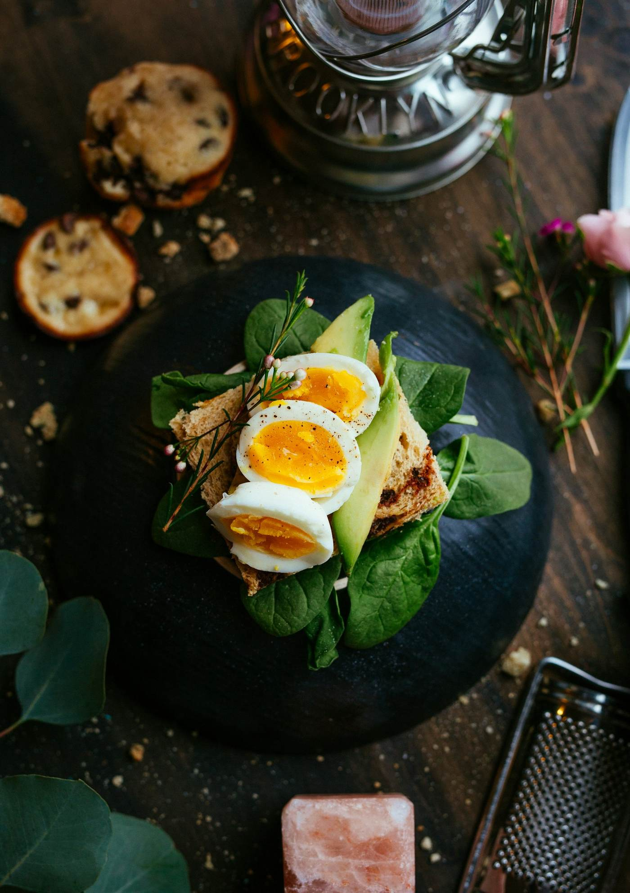
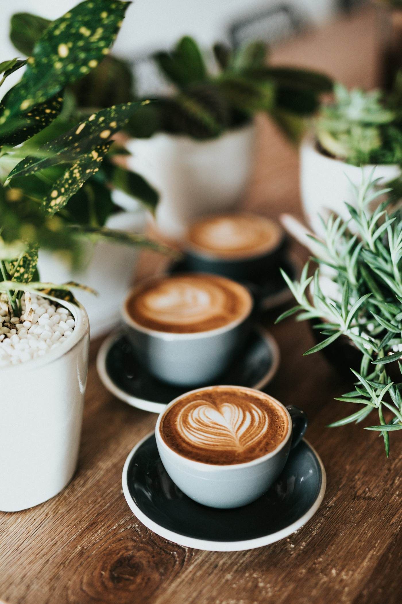
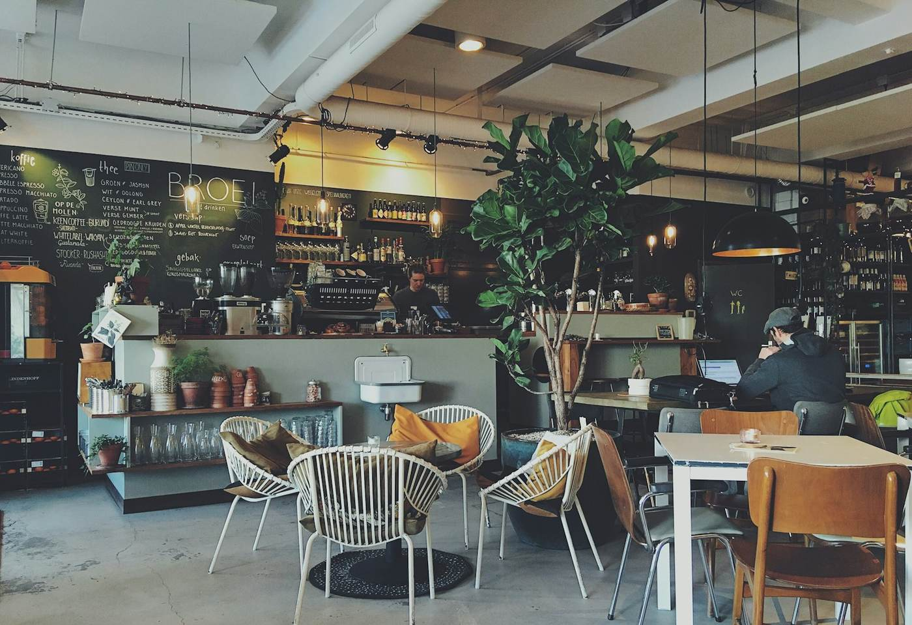
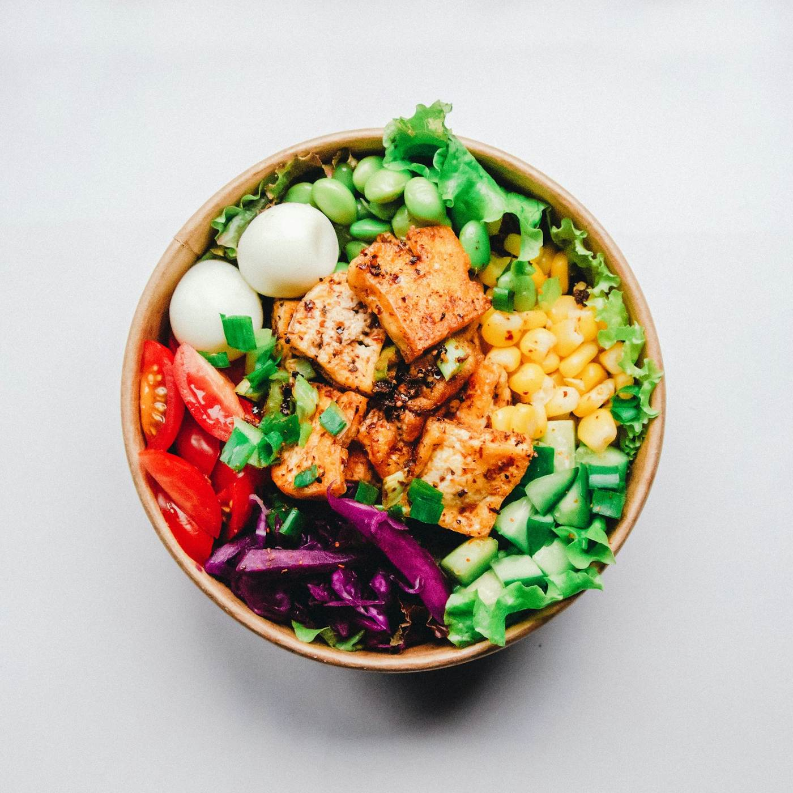
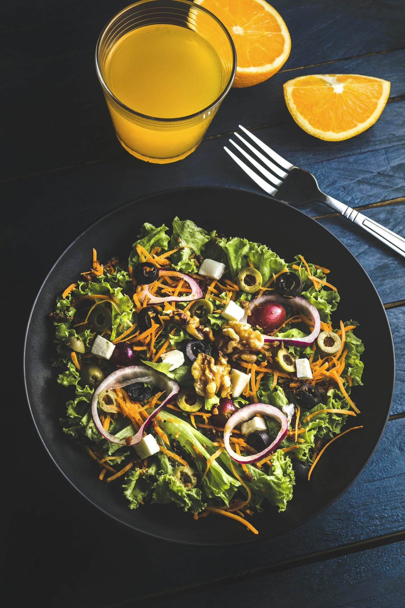
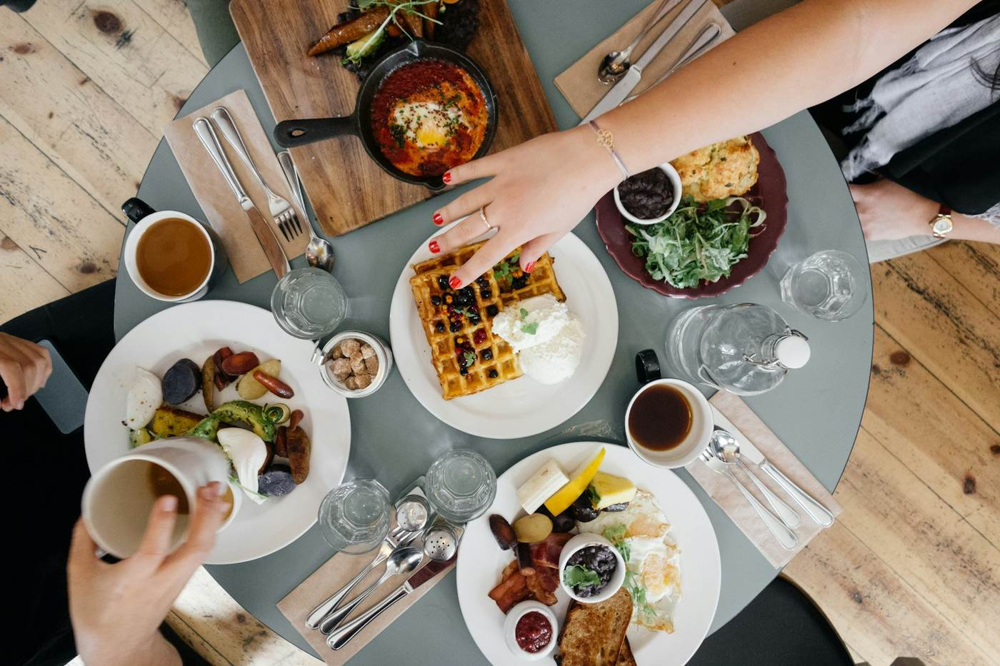
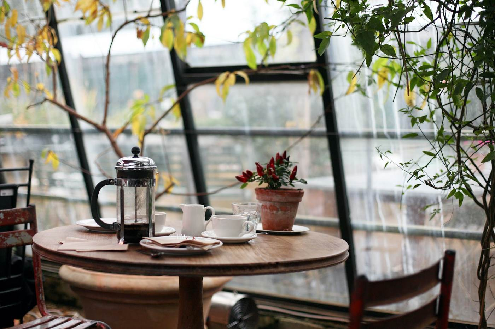

Brunch & café · Porto
Manhãs lentas, mesa cheia.
Panquecas, ovos, torradas de fermentação lenta e café de especialidade, servidos todos os dias até às 16h.

- Panquecas
- Ovos Benedict
- Torradas de abacate
- Bowls de açaí
- Café de especialidade


Sobre a Mesa Verde
Um café de bairro com tempo.
A Mesa Verde abriu para ser o sítio onde apetece ficar: mesas grandes, luz natural e comida feita na hora, com ingredientes de produtores da região.
Fazemos o pão, as compotas e as granolas na nossa cozinha. O café vem de uma torrefação artesanal e muda com as estações.
Porquê a Mesa Verde
Bons ingredientes, sem atalhos.
Feito na hora
Cada prato é preparado no momento, sem pressas.
Produtores locais
Ovos, legumes e queijos de pequenos produtores.
Pão da casa
Massa-mãe com 24 horas de fermentação.
Para todos
Opções vegetarianas, vegan e sem glúten.
O nosso espaço
Luz, café e boa companhia.





Clientes
“O melhor brunch da cidade. Voltamos todos os domingos com os miúdos.”
“As panquecas são incríveis e o café é mesmo bom.”
“Espaço lindo e equipa simpática. Tem sempre opções vegan.”
“Fizemos um pequeno-almoço de equipa e correu tudo lindamente.”
Testemunhos de exemplo. Substitui pelos testemunhos reais dos teus clientes.
Grupos e eventos
Festas, aniversários e reuniões.
Reservamos a sala do fundo para grupos até 20 pessoas, com menu de brunch à medida.
Contacto
Guarda já a tua mesa.
Aceitamos reservas para grupos a partir de 4 pessoas. Para menos, é só aparecer.
Rua de Cedofeita, 210, Porto
- Todos os dias08h30 – 16h00